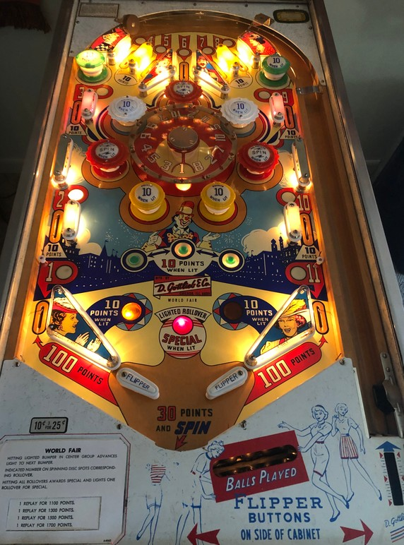

Numbers 1 through 11 are collected around the playfield. 1 and 11 are the left and right out lanes, 2 and 10 are the left and right middle side lanes, 3 and 9 are the left and right upper side lanes, and 4-5-6-7-8 are the top lanes. To start, all lanes are lit. Make a lit lane to unlight that lane and light the corresponding number on the backglass. The out lanes (1 and 11) score 100 points, while all other number lanes score 10. Collecting all 11 numbers scores one instant Special and qualifies the Lighted Rollover Special, which rotates between numbered lanes seemingly randomly based on 1-point switch hits. To my knowledge, Special can only score a free game, not points or an extra ball.
Of the 7 bumpers in the middle of the table, only 1 is lit at a time. Hitting the lit bumper will unlight that bumper, and in turn light the next bumper in anticlockwise sequence. The two bottom bumpers are passive bumpers, while the other 5 are pop bumpers. Bumpers score 1 point or 10 when lit. Red pop bumpers, when lit, also spin the center dial; when the spin completes, 30 further points are scored, and the number lit on the bottom of the wheel will be spotted in the 1-11 sequence. There are 15 positions on the wheel; 2, 5, 7, and 10 are duplicated, while all other numbers in the 1-11 sequence appear once each.
1-point switch hits alternate which of the top green passive bumpers, left or right rollover buttons just above the flippers, and slingshots can be lit for 10 points instead of 1. Only one feature in each pair is lit at a time. The center rollover button always scores 10 points.
There are no in lanes, kickbacks, free ball gates, or center posts. Flippers back up directly to the slingshots. There is no extra ball feature. As a quasi-end of ball bonus, all drained balls score 30 points and a spin when they hit the out hole. Tilt ends game.
The below picture of World Fair's playfield was taken from the Internet Pinball Database, where it was originally provided by David DiEnno.
